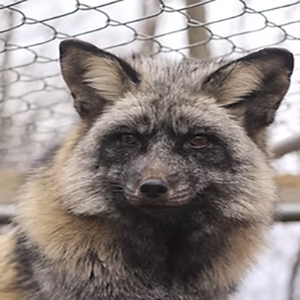
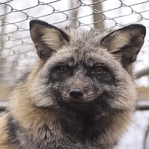
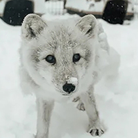
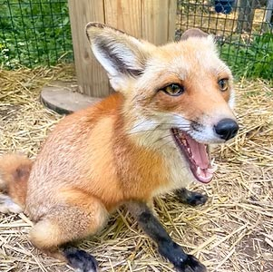

Meet Our Residents
Get to know the amazing foxes we’ve rescued and cared for at Arctic Fox Daily Sanctuary. Each one has a unique story and a special place in our hearts.
Toto's Story


Captive-born Arctic Fox
The Catalyst of Arctic Fox Daily
Rest in Paradise my Toto Bear, 2012-2022
Toto was the original fox - the "OG" guy - who started this all: In 2012, I purchased Toto - the only fox I've "purchased" - out of a sketchy situation when he was approximately 4 months old. This is far older than someone would normally purchase a fox for a companion animal, as it is much more difficult to bond with a fox of this age. However, I knew I needed to get him out of the situation he was in.This marked the beginning of a rewarding journey of learning how to live with and care for this beautiful species. When word started to get around in the wildlife rescue community that I legally owned and cared for a fox, I slowly started to get calls asking to assist with other foxes, which turned into me quickly becoming specialized in the area of foxes, fast forward several years, and voila, Arctic Fox Daily Wildlife Rescue came to be.Toto was primarily a "hands-off" fox, and doesn't usually prefer physical attention. However, in his older years, he started to not mind the occasional love-scratch here and there. Even so, he and I had an incredible, unspoken bond. He was the catalyst to what we are today. I will miss him dearly and forever be thankful for what he taught me.
Lulu's Story


Captive-born Arctic Fox
Lulu came to me when she was only 7 weeks old. She was purchased by well-meaning people who thought that a fox would be a good fit as a pet for their family, but they learned otherwise. They lived in an apartment in a very populated city, (where it was also very illegal to own a fox without the proper licensing) and they quickly found out that a fox kit is not like a puppy. Long story short, they discovered that they had made a huge mistake. Knowing that Lulu was bound to eventually be confiscated, and desiring the best for her, they reached out to a canine rescue and asked them to take her. The resuce called me, and the rest is history! I’ve had a few foxes in my possession with almost identical backgrounds as Lulu’s. Her story is not unique, and an unfortunate reality for many exotic pets. Many exotic species do not make good additions to the average home, require advanced experience, outdoor housing, and need special enrichment. It's important to realize that just because they're cute and seemingly innocent (especially as babies), it doesn't mean they're easy to care for. Rehoming is more difficult on exotics - especially foxes - than on most domestic animals. Their sense of trust is very fragile, and they bond strongly and quickly to their caretakers when they're young. This is why it's crucial to do extensive research and get hands-on experience with the species before adding any exotic pet to your family. Thankfully, Lulu was young enough when she arrived here that it wasn't extremely difficult to establish a good relationship with her. She's my girl! And like a lot of us girls, she can be a little moody: Some days, she flops over at my feet - patiently awaiting belly rubs - the second I walk into her enclosure. Other days, I can't get anywhere near her. It's always on her terms.
March 2020 Confiscation Rescue Story

 

Nuit and Judy
Captive-born Red Foxes
Rest in Paradise, sweet Cedar and beautiful Ruby.
In March of 2020, we were asked to assist in an elaborate rescue mission and confiscation of almost thirty foxes. We kicked into gear, and worked hard to prepare space for them, with only days notice. These foxes are all various domestic color morphs of the Red Fox species. They were confiscated from a premises where they were not being cared for properly, and were being kept illegally. Originally, these foxes were born on a fur farm (destined to eventually be killed for their fur). Needless to say, the beginning of their lives was pretty rough! Several fox rescuers from around the United States worked together to make sure these foxes had safe places to go once they were removed from the premises. We ended up coming home with nine of these foxes. We were able to find forever-homes in other sanctuaries and nature centers for five of the nine foxes, and two of them remain permanently under our care.
Archie's Story
Captive-born Arctic Fox
The most important thing you should know about Archie: He's completely blind. Archie came to our rescue in October 2020. We don't know much about the first part of Archie's life. We were told that Archie was dropped off at a dog rescue in Colorado, and information was passed along that he was born completely blind, and that he was eight years old at the time of this surrender (putting his birthday around 2012). Next, Archie went to a fox rescue in Minnesota, called Save a Fox. From what we've been told, Archie was pretty depressed acting during his time at Save a Fox, and wouldn't come out of his shell. This was not because of any fault on their part; major life changes are difficult on any fox, especially one who can't see what's going on. After a few conversations back and forth with Save a Fox, we all decided that Archie should come stay here with us! They didn't have any other Arctic foxes, and we had space. We sectioned off a small corner of Toto and Lulu's enclosure, and kept Archie there for a couple of weeks. This allowed him to become familiar and form a safe spot within the enclosure, while also allowing him, Toto and Lulu to "meet" with a barrier between them. Once we felt that everyone was going to mesh, we opened up the corner, so Archie could come and go as he pleased, while still having his safe spot to return to. Fast forward, and Archie has come out of his shell beautifully. It's amazing. He's even usually the first of the trio to greet us with a tail wag, looking for a treat! And here's the best part... Lulu has a big crush on him! He and Lulu are like that one couple who bicker way too much (they vocally yell at each other all the time), but at the same time, you couldn't imagine them not together. Toto just rolls his eyes at them. They're the funniest, sweetest Arctic fox trio!
Porsha's Story
Non-releasable Wild-born Red Fox
Porsha is a pet surrender that came from out of state. Although Porsha had an extremely loving owner for two years, owning a fox is illegal in most states without proper licensing. Porsha’s owner realized that their current situation could end badly - oftentimes situations like this end in euthanasia of the animal, because there aren’t many rescues who take in foxes - and she did the right thing and reached out for help with placement. Porsha has a fun, youthful personality, and she goes between super sassy to super loving in seconds. She's a great example of why it's so important to be able to recognize and be familiar with body language when working with foxes. She's a very comical fox!